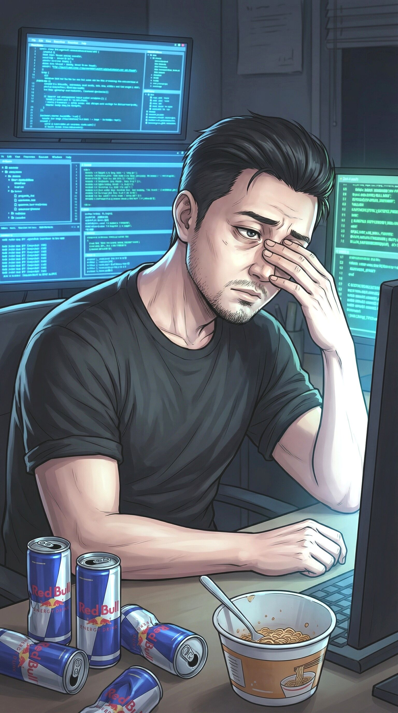
凌晨三点半。
我已经不记得这是第几个通宵了。屏幕上的数据流跑得飞快，我揉了揉发酸的眼睛，视线扫过桌面——五个空的红牛罐头整整齐齐排成一列，旁边那碗泡面早就凉透了，面条坨成了一团。
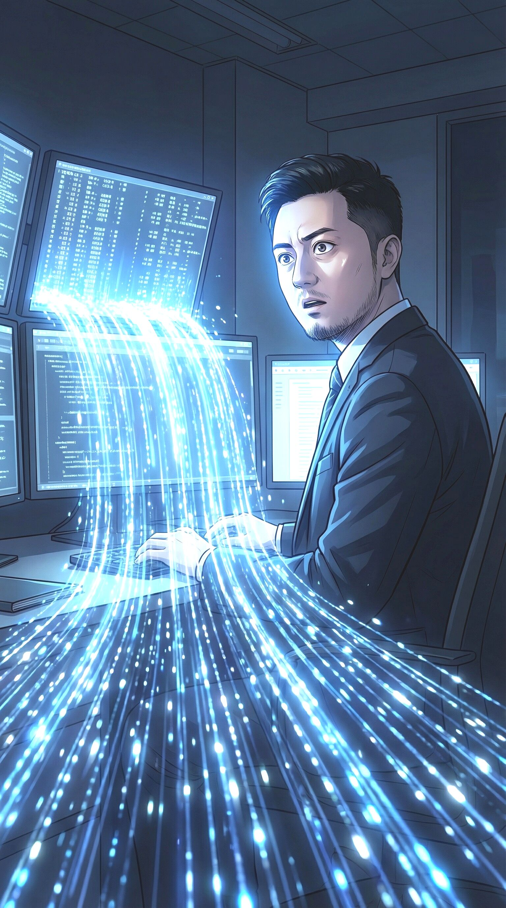
然后屏幕上的数据流暴走了。
所有字符突然变成了光点——像瀑布一样从屏幕里"溢"了出来。不是bug，不是显示故障。那些光点有质感、有温度，正在朝我涌来。
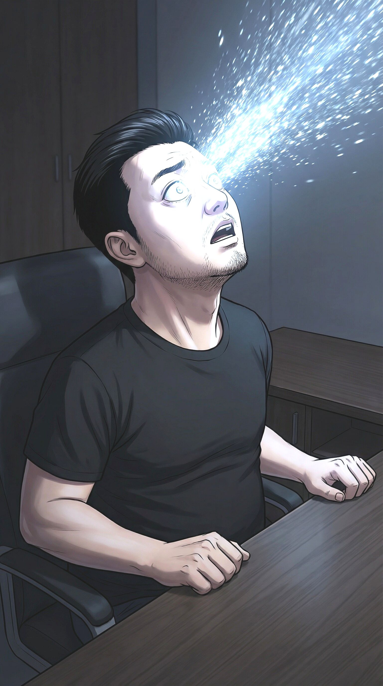
光流直接灌进了我的眼睛。
剧痛。像有人在我大脑里装了一台服务器，然后暴力启动。我想喊，但嘴巴张不开——
黑屏。
我从办公桌上惊醒。
头痛欲裂，像宿醉的十倍。摸了摸额头，没有伤。阳光从落地窗照进来，刺得我眯起眼睛。
但眼前的世界……不对劲了。
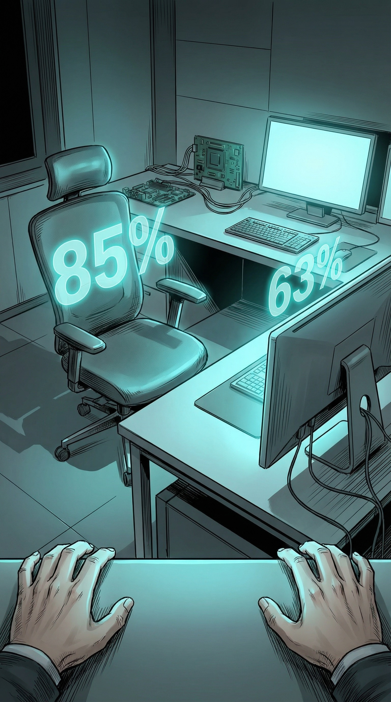
办公室里每件物品旁边都浮着半透明的数字。
我使劲眨了几下眼。数字还在。这不是眼花，也不是幻觉。
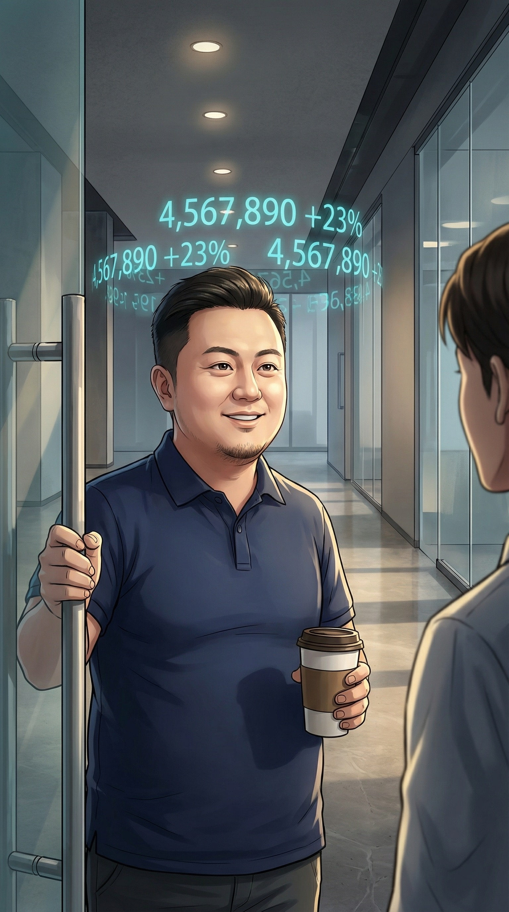
门被推开，老钱端着咖啡走进来。
他头顶浮着一串数字——
我没回答。我盯着他头顶那串数字看，然后鬼使神差地伸手去"碰"——
手穿过去了。
老钱看着我在空气中挥来挥去的手，脸上的表情从担心变成了困惑，又从困惑变成了那种"我老板可能疯了"的微妙恐惧。
我赶紧放下手，干咳一声。
上午十点。B轮融资对接会。
我换了身像样的行头——深色衬衫、西裤——走进会议室。苏妍带着三个人已经坐好了。
她瘦削干练，高马尾，白衬衫扎进黑裤子里，整个人像一把刚开刃的手术刀。
我伸出手。
指尖触碰的瞬间——
脑中轰鸣一声。像有人在我的神经网络里丢了一颗深水炸弹。
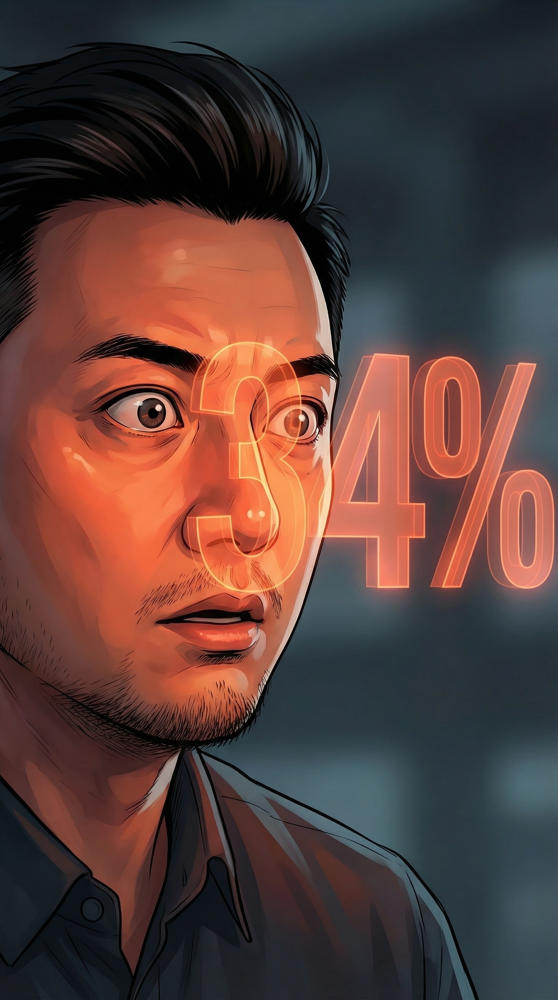
眼前出现了一个巨大的数字——
34%？
我之前的判断至少70%以上。我们数据好、增速快、赛道热。哪来的34%？
然后——记忆税发作了。
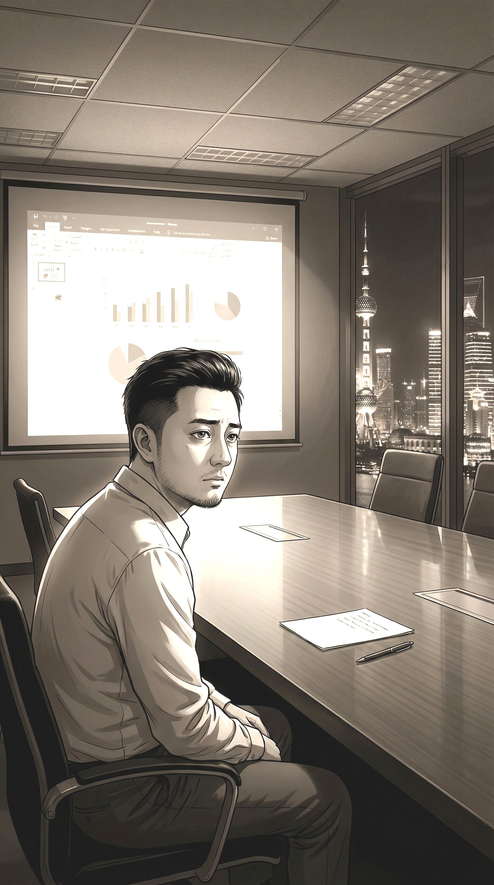
空荡荡的会议室。投影仪还亮着，PPT停在"合作展望"那一页。
对面椅子上放着一张纸条："决定不投了，方向有分歧。"
那种窒息的孤独感像冰水一样灌进来——
窗外是深夜的上海。霓虹灯照在我脸上，红红绿绿的，像给一具行尸走肉化了妆。
那个夜晚我坐了很久。不是在想下一步怎么办——是在想，要不要继续。
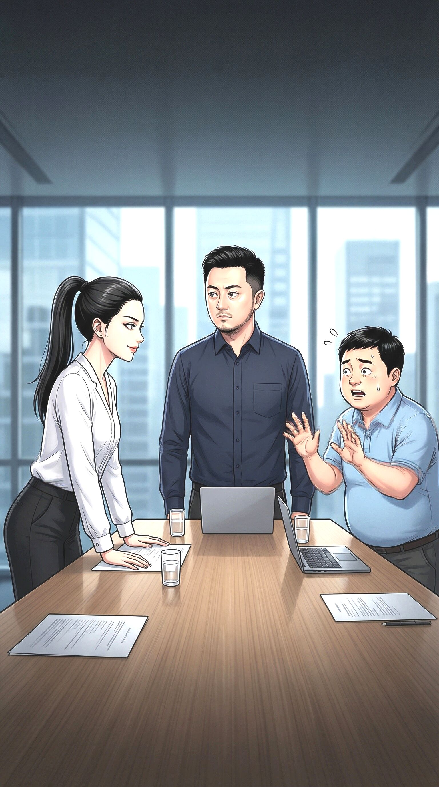
闪回结束。我发现自己在会议室里呆愣了整整五秒。
她微笑着看我，那种投资人标配的、温暖但不走心的微笑。
老钱在旁边疯狂给我使眼色，眉毛都快飞到天上了。
看到34%的成功概率，但不知道原因。我该怎么办？
▸ 我选了B。遇到未知系统，第一反应永远是——拆开看。
我挨个和苏妍团队的人握手。每次握手都像触发了一次全身CT扫描。
轮到苏妍——
她的数据里有一个红色标记在疯狂闪烁。
她不是来投资的。
她是来摸底的。
然后——记忆税又来了。
阳光明媚的加州。一个西装革履的基金经理拿着我们的商业计划书，笑得像个善良的圣诞老人。
我信了。
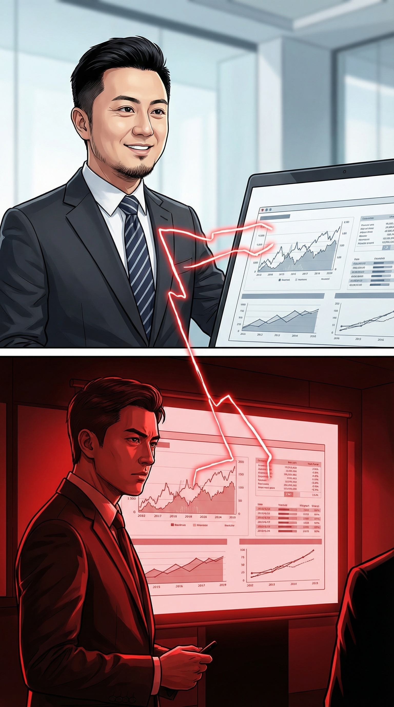
两周后。竞对的融资PPT里，出现了我们的核心策略。
一字不差。
那个"善良的圣诞老人"是竞对的暗桩。笑容是假的，点头是假的，"看好"也是假的。唯一真的是——他把我们扒了个精光。
闪回切换。画面从灰暗变成了金色。
公司第一次月流水破千万。我站在落地窗前，手机上是银行到账短信。阳光洒在脸上，暖得像一个拥抱。
那种纯粹的快乐和确认感——能力增幅！
苏妍身上的红色标记变得更清晰了。不只是"数据收集"，我看到了更多细节——
发现苏妍不是来投资的，她在"收集数据"。我该怎么做？
▸ 我选了B。让对手先出招，我追踪信号源。这是黑客的本能。
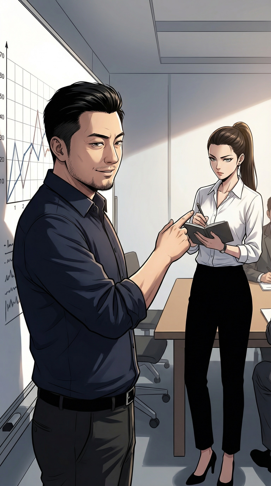
接下来的一个小时，我在会议中完成了一次完美的信息投毒。
给苏妍团队三个人分别展示了三套略有不同的核心数据。差异很小，但足以溯源。
三份文件夹，三种颜色标签，三组不同的数字。
苏妍在认真记笔记。她的团队成员也在记。
很好。咬钩了。
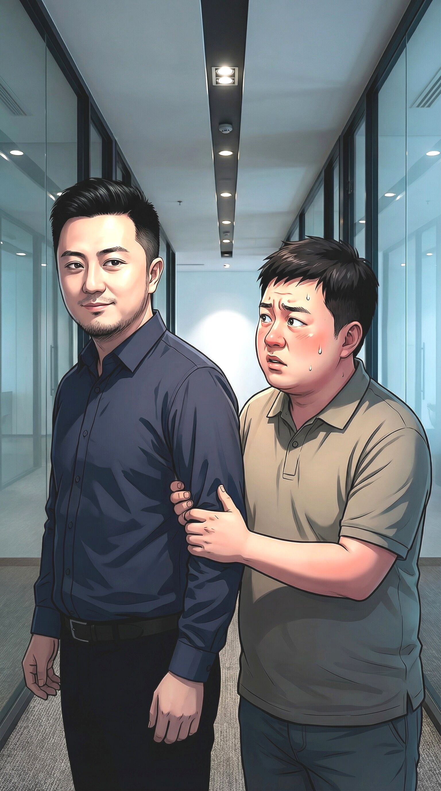
散会后，老钱在走廊上拉住了我的胳膊。他的脸涨得通红。
我拍了拍他的肩膀。
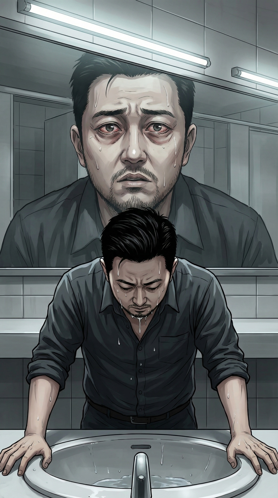
连续使用三次商业直觉。记忆税累积到了临界点。
我冲进洗手间，双手撑着洗手台，冷水拍在脸上。
第三次闪回不是某段特定记忆——是记忆碎片的风暴。
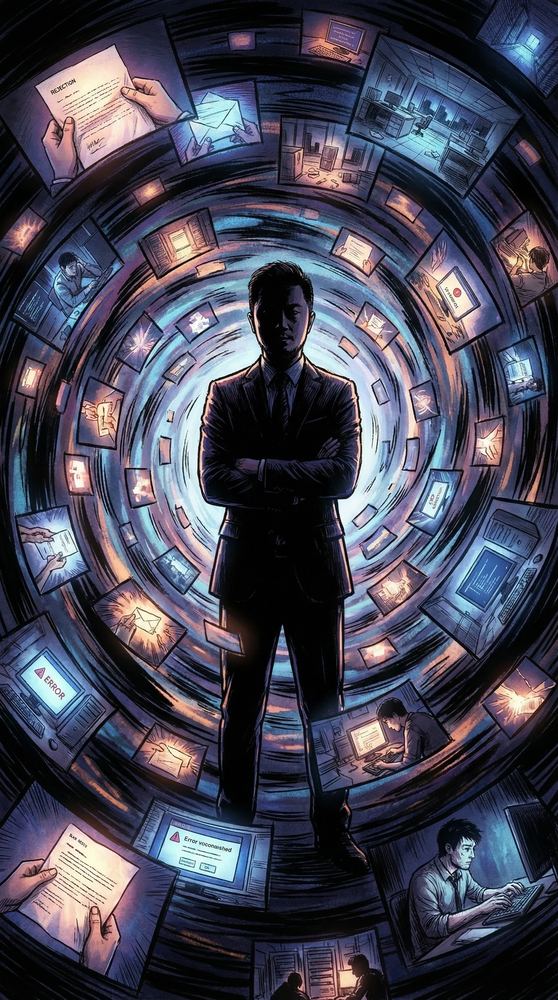
融资被拒。产品崩溃。团队散伙。凌晨独坐。合伙人翻脸。账上只剩两个月的工资。
所有痛苦记忆同时涌来，像一千个浏览器标签页同时弹开，每一个都在尖叫。
我抓着洗手台的边缘，指节发白。
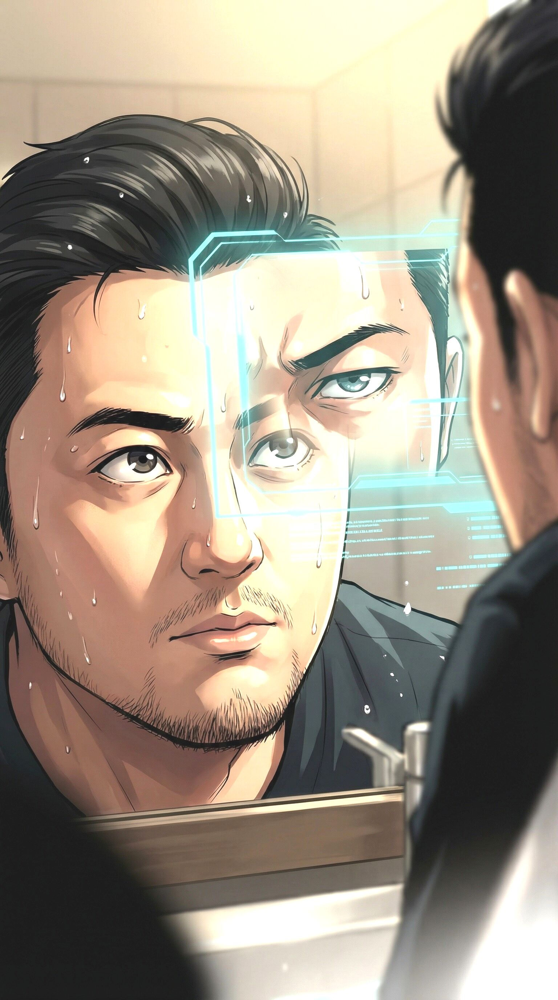
在记忆风暴的最后——
有一个声音。不是记忆，是那个AI系统崩溃前最后一行代码的"语音化"。它说——
商业直觉的界面在我眼前刷新了一次。数字变得更清晰了。分辨率提高了。
我抬起头，看着镜子里的自己。冷水从下巴滴落。
突然想通了一件事——
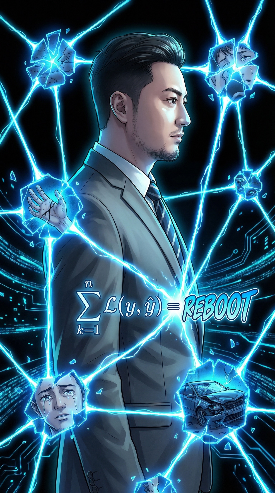
我发现痛苦记忆是在"训练"能力。我该如何面对？
▸ 我选了B。不走极端。该痛的时候痛，该干的时候干。
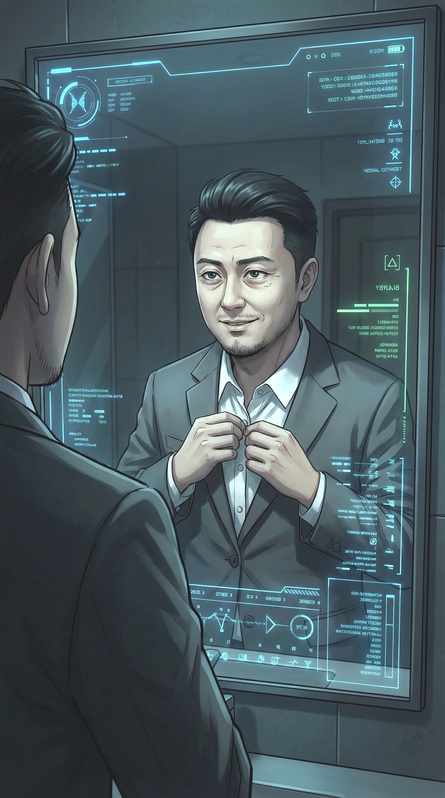
我扣好衬衫扣子，理了理头发。镜子里的人重新变得精神了。
嘴角甚至有点上扬——因为我知道了一件所有人都不知道的事：
我推开洗手间的门，阳光打在脸上。
数据流在视野里稳定运行，比之前更清晰、更有条理。
该回去干活了。
夜里。公司大部分人都走了。
我一个人在办公室复盘今天的情况。屏幕上是数据分析，但我的心思不在这里。
商业直觉的冷却恢复了。使用次数重置。
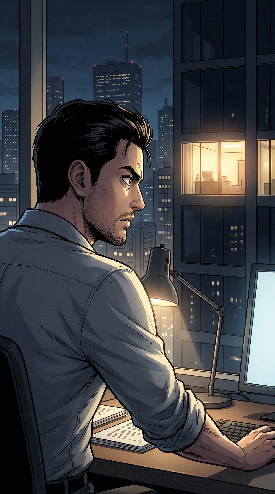
我无意中抬头看向窗外。
街对面的写字楼，大部分都黑了。但有一间办公室——灯还亮着。
不知道为什么，我的直觉在刺痛。不是商业直觉，是最原始的、动物本能的那种警觉。
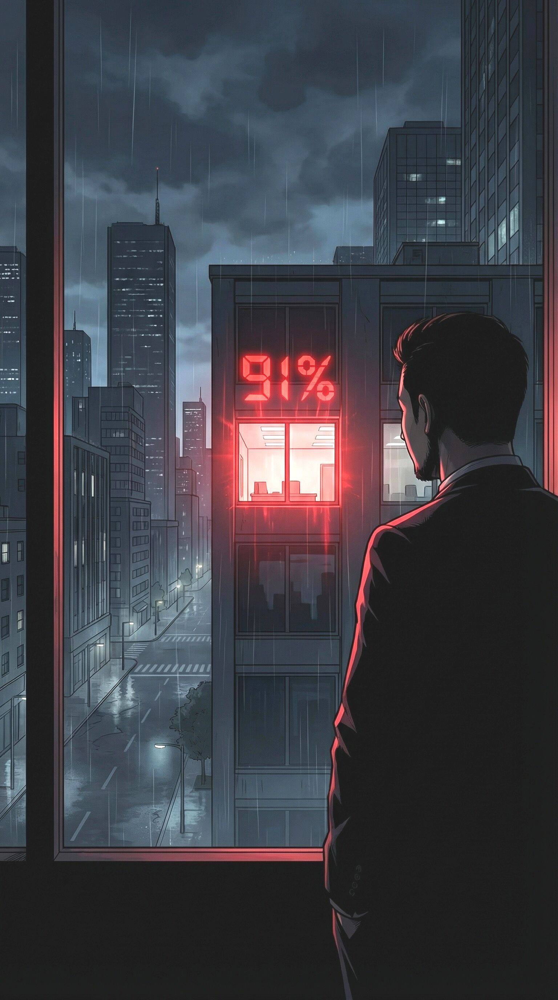
我下意识触发了一次商业直觉，朝那个方向"扫"了一下。
一个概率数字浮现——
数字是血红色的。在黑暗的城市背景下，像一只睁开的眼睛。
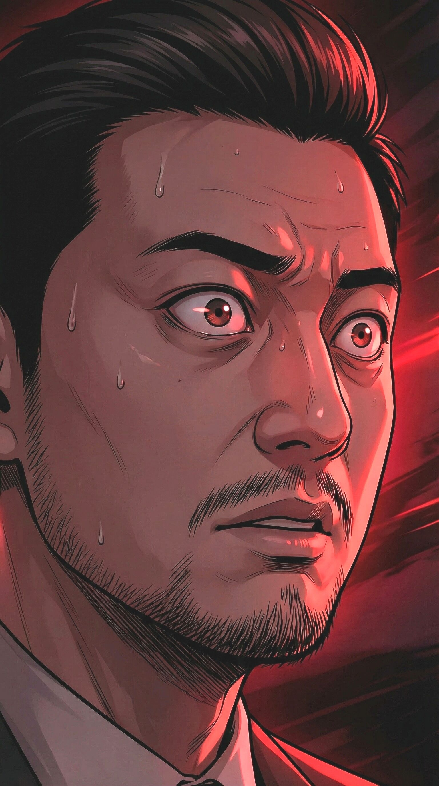
91%。
比苏妍的红色标记还要致命。苏妍只是一枚棋子，但这个数字——这个数字在告诉我，对面那间办公室里坐着的人，是下棋的人。
我的瞳孔收缩。手不自觉地攥紧了。
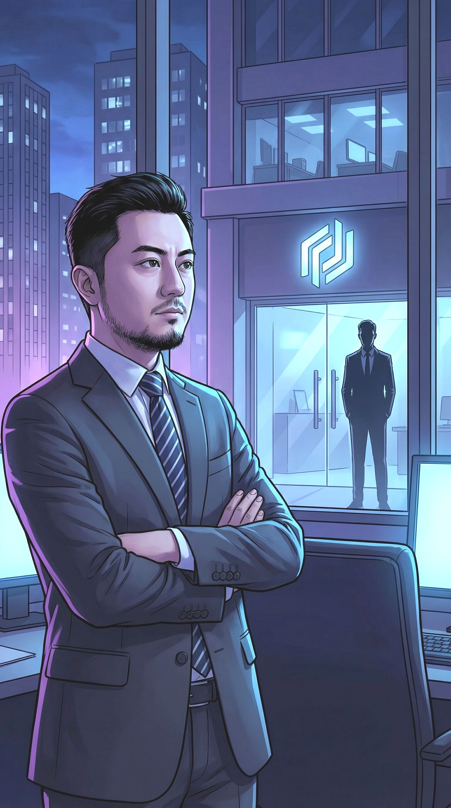
那间办公室的玻璃门上印着一个logo。
现代感的、锐利的线条。下面是一个名字——
韩硕。NextGen AI。
我不认识他。
但他的数字在对我尖叫。
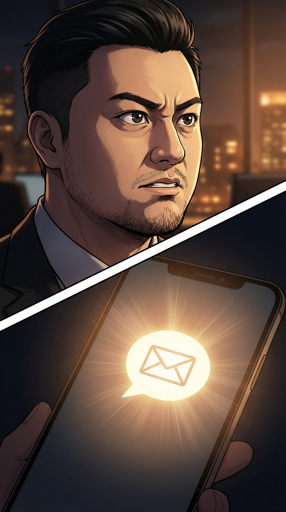
手机震动。老钱的消息。
我盯着屏幕，嘴角慢慢扯出一个弧度。
街对面，那盏灯灭了。
万界老板·重启 — 第一章「重启」
第二章「记忆税」 即将上线
EXP-753 | Trinity V3 Content